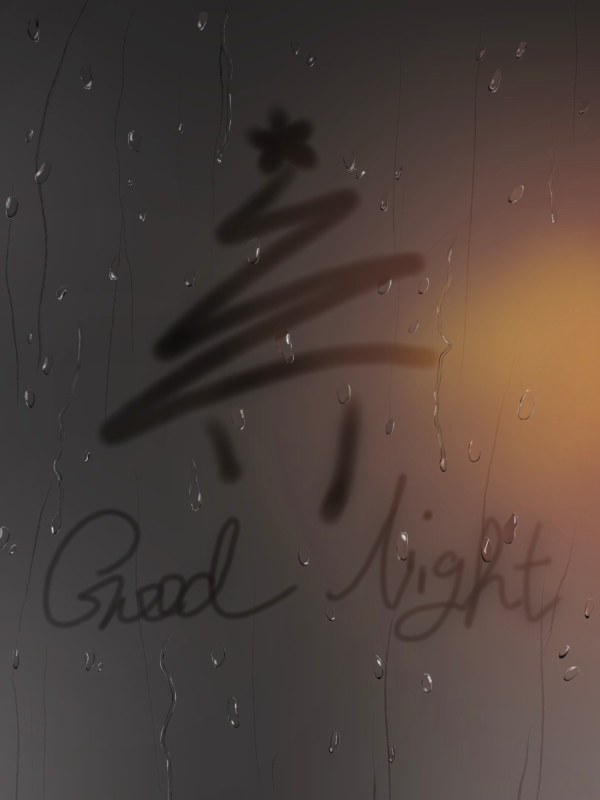
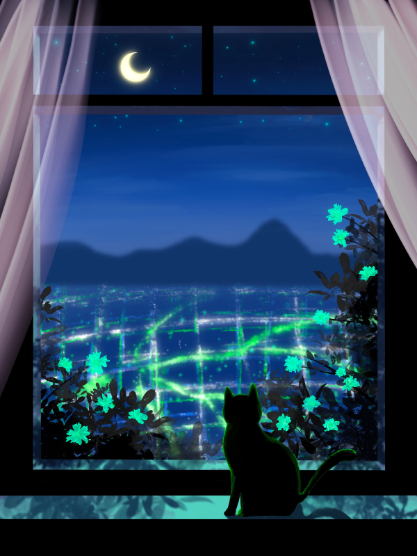
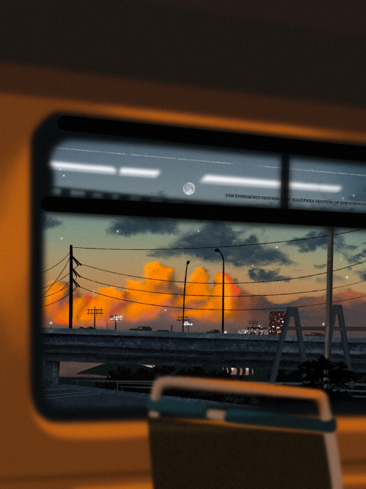
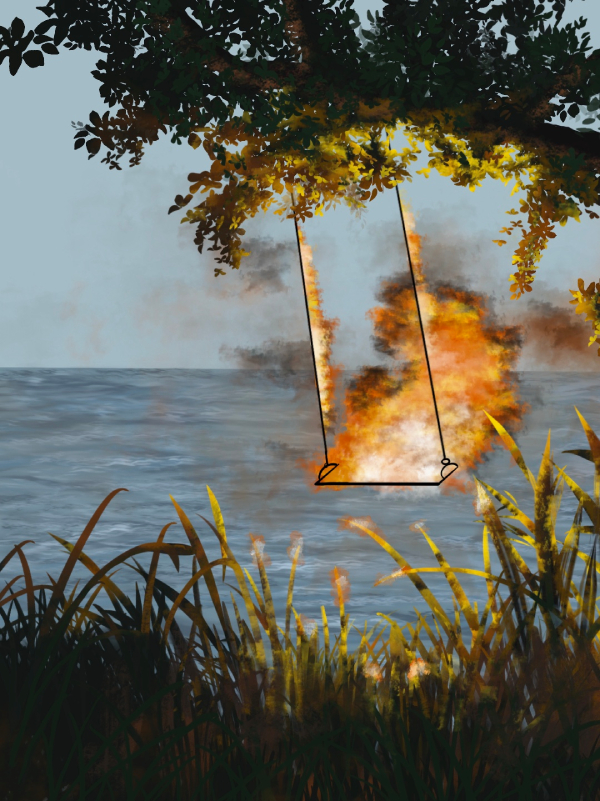
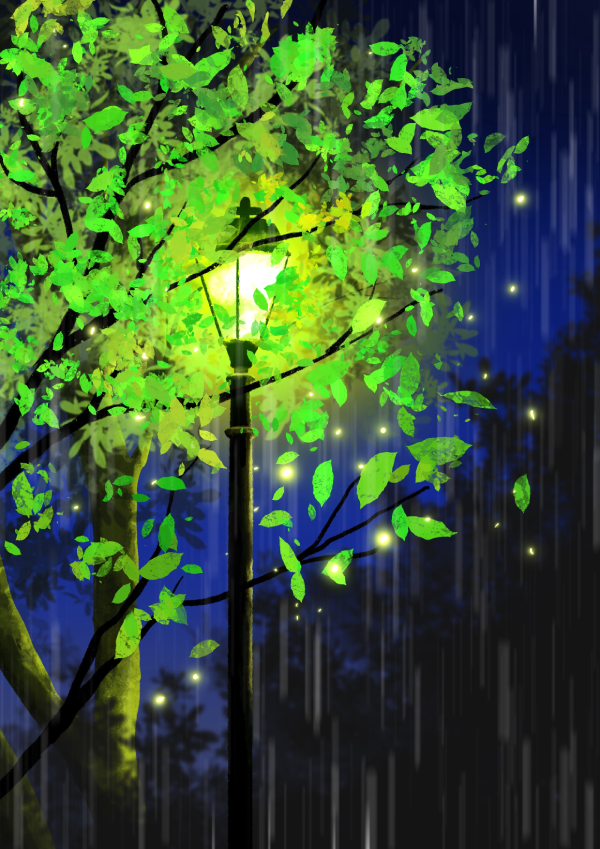
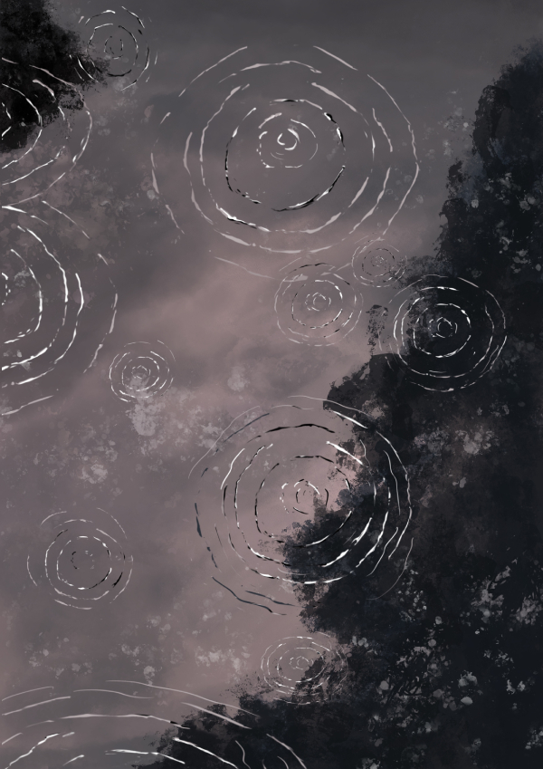

Good Night

This piece captures a quiet rainy night through a foggy window. I created this artwork to show the peaceful feeling of looking through a rainy window at night.
Click an artwork to view more detail
This gallery includes selected drawings from my past works. Each piece reflects a different emotion of mine.

This piece captures a quiet rainy night through a foggy window. I created this artwork to show the peaceful feeling of looking through a rainy window at night.

I wanted to create a dreamy and peaceful feeling, like watching the world from inside a soft dream.

This piece shows the view from a train window at dusk. I wanted to capture the quiet moment when the sky is changing colors and the city feels far away.

This piece shows an empty swing near the water, surrounded by fire and warm light. I wanted to create a strange and emotional feeling, as if a peaceful memory is slowly disappearing.

This piece shows the feeling of looking up at a streetlight on a rainy night. The lonely sadness in the dark rain contrasts with the warm yellow light.

This piece shows rain falling into dark water, creating circles that slowly spread outward. I wanted to capture a quiet and heavy mood, like thoughts expanding in the middle of a rainy night.